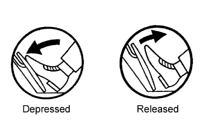
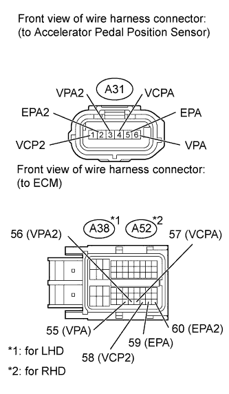

DTC P2121 Throttle / Pedal Position Sensor / Switch "D" Circuit Range / Performance |
| DTC Code | DTC Detection Condition | Trouble Area |
| P2121 | The difference between VPA and VPA2 is below 0.4 V, or higher than 1.2 V for 0.5 seconds (1 trip detection logic). |
|
| 1.READ VALUE USING INTELLIGENT TESTER (ACCELERATOR POSITION SENSOR) |
 |
Connect the intelligent tester to the DLC3.
Turn the engine switch on (IG) and turn the tester on.
Enter the following menus: Powertrain / Engine and ECT / Data List / ETCS / Accelerator Position No.1 and Accelerator Position No.2.
Read the value displayed on the tester.
| Accelerator Pedal Operation | Accelerator Position No. 1 | Accelerator Position No. 2 |
| Released | 0.5 to 1.1 V | 1.2 to 2.0 V |
| Depressed | 2.6 to 4.5 V | 3.4 to 5.0 V |
| Result | Proceed to |
| OK | A |
| NG | B |
|
| ||||
| B | |
| 2.CHECK HARNESS AND CONNECTOR (ACCELERATOR PEDAL POSITION SENSOR - ECM) |
 |
Disconnect the Accelerator Pedal Position (APP) sensor connector.
Disconnect the ECM connector.
Measure the resistance according to the value(s) in the table below.
| Tester Connection | Condition | Specified Condition |
| A31-6 (VPA) - A38-55 (VPA) | Always | Below 1 Ω |
| A31-5 (EPA) - A38-59 (EPA) | Always | Below 1 Ω |
| A31-4 (VCPA) - A38-57 (VCPA) | Always | Below 1 Ω |
| A31-3 (VPA2) - A38-56 (VPA2) | Always | Below 1 Ω |
| A31-2 (EPA2) - A38-60 (EPA2) | Always | Below 1 Ω |
| A31-1 (VCP2) - A38-58 (VCP2) | Always | Below 1 Ω |
| Tester Connection | Condition | Specified Condition |
| A31-6 (VPA) - A52-55 (VPA) | Always | Below 1 Ω |
| A31-5 (EPA) - A52-59 (EPA) | Always | Below 1 Ω |
| A31-4 (VCPA) - A52-57 (VCPA) | Always | Below 1 Ω |
| A31-3 (VPA2) - A52-56 (VPA2) | Always | Below 1 Ω |
| A31-2 (EPA2) - A52-60 (EPA2) | Always | Below 1 Ω |
| A31-1 (VCP2) - A52-58 (VCP2) | Always | Below 1 Ω |
| Tester Connection | Condition | Specified Condition |
| A31-6 (VPA) or A38-55 (VPA) - Body ground | Always | 10 kΩ or higher |
| A31-5 (EPA) or A38-59 (EPA) - Body ground | Always | 10 kΩ or higher |
| A31-4 (VCPA) or A38-57 (VCPA) - Body ground | Always | 10 kΩ or higher |
| A31-3 (VPA2) or A38-56 (VPA2) - Body ground | Always | 10 kΩ or higher |
| A31-2 (EPA2) or A38-60 (EPA2) - Body ground | Always | 10 kΩ or higher |
| A31-1 (VCP2) or A38-58 (VCP2) - Body ground | Always | 10 kΩ or higher |
| Tester Connection | Condition | Specified Condition |
| A31-6 (VPA) or A52-55 (VPA) - Body ground | Always | 10 kΩ or higher |
| A31-5 (EPA) or A52-59 (EPA) - Body ground | Always | 10 kΩ or higher |
| A31-4 (VCPA) or A52-57 (VCPA) - Body ground | Always | 10 kΩ or higher |
| A31-3 (VPA2) or A52-56 (VPA2) - Body ground | Always | 10 kΩ or higher |
| A31-2 (EPA2) or A52-60 (EPA2) - Body ground | Always | 10 kΩ or higher |
| A31-1 (VCP2) or A52-58 (VCP2) - Body ground | Always | 10 kΩ or higher |
|
| ||||
| OK | |
| 3.REPLACE ACCELERATOR PEDAL ROD ASSEMBLY |
Replace the accelerator pedal rod assembly (Click here).
| NEXT | |
| 4.CHECK WHETHER DTC OUTPUT RECURS (ACCELERATOR PEDAL POSITION SENSOR DTCS) |
Connect the intelligent tester to the DLC3.
Turn the engine switch on (IG) and turn the tester on.
Clear the DTCs (Click here).
Start the engine.
Allow the engine to idle for 15 seconds.
Enter the following menus: Powertrain / Engine and ECT / DTC.
Read the DTCs.
| Result | Proceed to |
| P2121 | A |
| No output | B |
|
| ||||
| A | ||
| ||